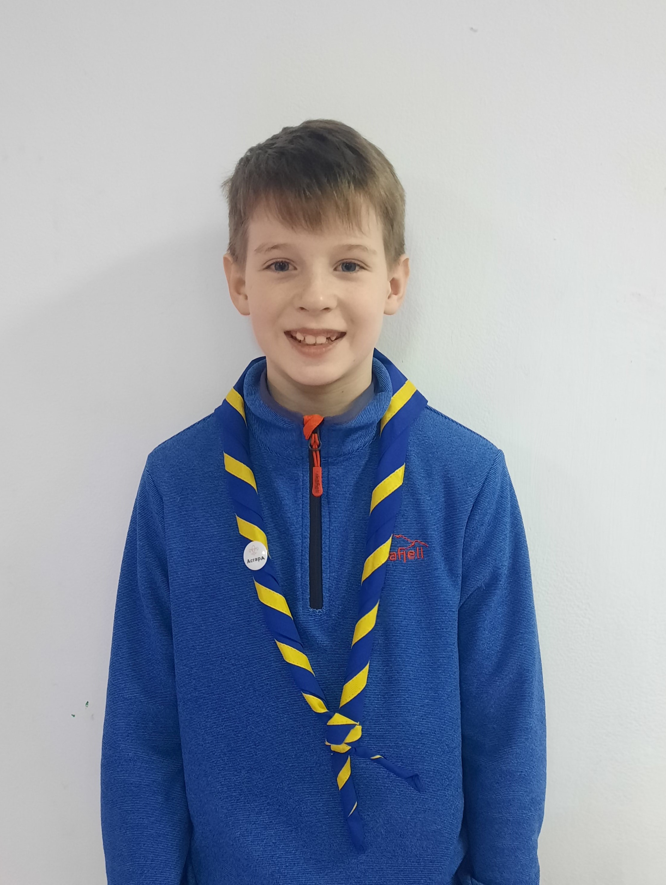
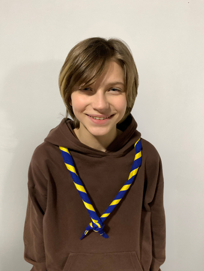
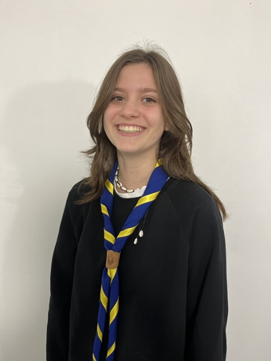
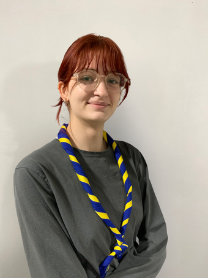

Наша місія
Головна мета створення НОСУ – об’єднання зусиль молодих людей задля побудови потужного Скаутського Руху в Україні, а також представлення України на міжнародному рівні.
“Наша Місія – це сприяння вихованню молоді України за системою цінностей, заснованій на Скаутській Обіцянці та Скаутському Законі.”
Через Скаутинг ми будуємо кращий світ, де люди самореалізуються як особистості та відіграють конструктивну роль у суспільстві. Ми хочемо і розвиваємо українське суспільство, створюючи умови для всебічного формування особистости на основі Скаутського методу. Ми докладаємо зусиль щодня, щоб надати молоді України можливості зростати, робити свій внесок в наближення миру, мандрувати, знайомитись зі Скаутами інших країн тощо.
Наша Програма
Скаутинг готує молодих людей бути активними громадянами суспільства, надаючи їм навички та лідерські якости для реагування на виклики, що з ними стикається наш світ. Скаутська Молодіжна Програма є основою Скаутингу.
Це відповідно організований, практичний навчальний процес для дітей та підлітків, спрямований на гармонійний та всебічний розвиток особистости задля досягнення свого найвищого потенціалу.
Молодіжна Програма розглядає шість вимірів розвитку молодої людини – соціальний, фізичний, інтелектуальний, емоційний, духовний та характер – через можливости, навчання та досвід.
Наша програма не є директивною, а це означає, що ми визнаємо розмаїття інтересів і досвіду наших молодих людей та заохочуємо їх шукати цікаві та захопливі для них завдання. Кожен може обрати заняття, що відповідає основним напрямкам Програми, яке згодом стає частиною їхньої Скаутської подорожі.
Ми приймаємо той факт, що кожен Скаут має власний спосіб підходу до викликів, і заохочуємо кожного Скаута пройти свій особливий шлях, щоб досягти вищих цілей.
Вікові групи
Вікові групи: Скаутинг поділяється на різні вікові групи або секції, кожна з яких пропонує відповідну до віку діяльність. Скаути НОСУ об’єднуються у 4 вікові секції:
-

Кабскаути
6-10 років
Кабскаути
6-10 років
-

Скаути
11-15 років
Скаути
11-15 років
-

Венчури
16-17 років
Венчури
6-10 років
-

Ровери
6-10 років
Ровери
18-22 роки
Такий розподіл гарантує, що дитина буде спілкуватися зі своїми однолітками та брати участь у належних заходах. Варто зазначити, що із однієї вікової секції в иншу кожен член організації переходить не індивідуально, а разом з друзями – своїм патрулем, тому межі кожної вікової групи не є сталими.
Як це працює?

Зустрічі
Скаути зазвичай зустрічаються у своїх патрулях чи групах раз на тиждень на зборах патруля/гурта. Для молодших дітей зустрічі проводять підготовлені дорослі волонтери, які називаються Скаутськими лідерами (Скаут лідерами). Діти старшого віку самоорганізовуються та проводять збори, Скаут лідер не включається повноцінно в цей процес, а лише спостерігає, направляє та допомагає за необхідности. Під час зборів Скаути вчаться новим навичкам, працюють над проєктами та планують майбутні події чи пригоди. Ці зустрічі не схожі на уроки в школі, адже дорослий лідер не є вчителем для дітей, він їхній друг та наставник. Скаутинг виховує лідерство та командну роботу, тому часто дорослий лідер виступає у ролі спостерігача за діяльностю Скаутів.
Діяльність
Скаутинг передбачає поєднання активностей у приміщенні та на свіжому повітрі. Активності є масштабними і тривалими, як от: табори, походи тощо; так і короткі та вичерпні: наприклад, заняття з в’язання вузлів, надання першої домедичної допомоги та инше. Скаути працюють над суспільно корисними проєктами, що допомагають їм зрозуміти важливість віддачі та змін на краще у своїх громадах.
Відзнаки та нагороди
Здобуваючи різні вміння та отримуючи різний досвід через участь у заходах та проєктах, Скаути можуть здобувати відзнаки та нагороди, які символізують їхні здобутки. Ця система заохочує особистісний ріст та мотивує Скаутів кидати виклик самим собі і пробувати щось нове.
Цінності та Метод
Скаутинг побудований навколо набору основних цінностей, які підкріплюються Скаутською Обіцянкою та Законом. Детальніше про них в розділі Скаутський Метод
Підтримка та безпека
Скаутські організації всього світу надають пріоритет безпеці та добробуту своїх членів, і НОСУ не є винятком. Наші Скаутські лідери проходять спеціальне навчання “Захист від шкоди”, розроблене та запатентоване ВОСР, аби гарантувати безпечне та сприятливе середовище для всіх учасників Скаутського Руху у будь-якій діяльності. У Скаутингу кожен член Організації отримує можливість здобути цінні життєві навички, знайти друзів на все життя, стати рушієм змін на локальному та глобальному рівнях, створити незабутні спогади та багато иншого. Скаутинг допомагає кожному стати більш впевненою, відповідальною та всебічно розвиненою особистістю.
Хочеш дізнатися більше про історію Скаутів України? Переходь за посиланням